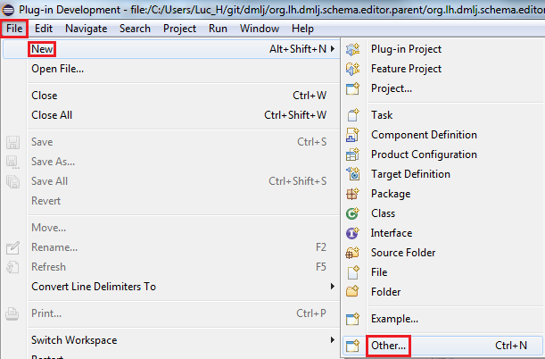
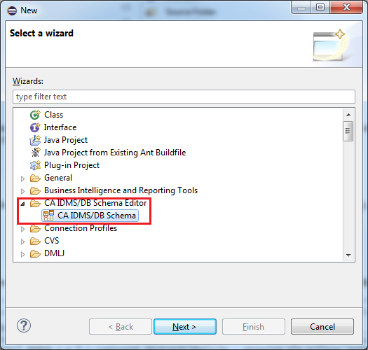
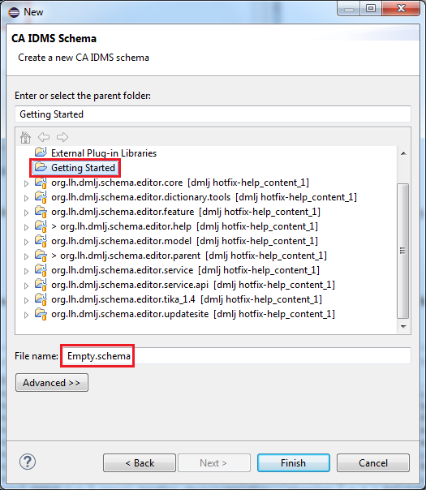
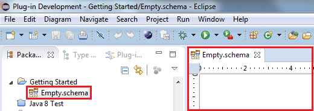

Creating a new Diagram
Although the Eclipse CA IDMS/DB Schema Diagram Editor can create diagrams from scratch, that feature
is currently of little use because you will not be able to create any records with the current
version of the diagram editor. Please refer to the topic "Importing a CA IDMS/DB schema diagram" if
you want to create a diagram for an existing schema.
To create a schema diagram from scratch, use the “File”/”New”/”Other” menu item :

Note that the number of items you see in your "New" menu can be different from the image above.
On the wizard selection window, select “CA IDMS/DB Schema” and press the Next button :

On the final wizard page, select a project of your choice and enter the name for your schema diagram
file, e.g. “Empty.schema”. Make sure the file extension is “schema” :

When you press the Finish button, your empty diagram will be created and an editor will be opened
for it in the editor area :
